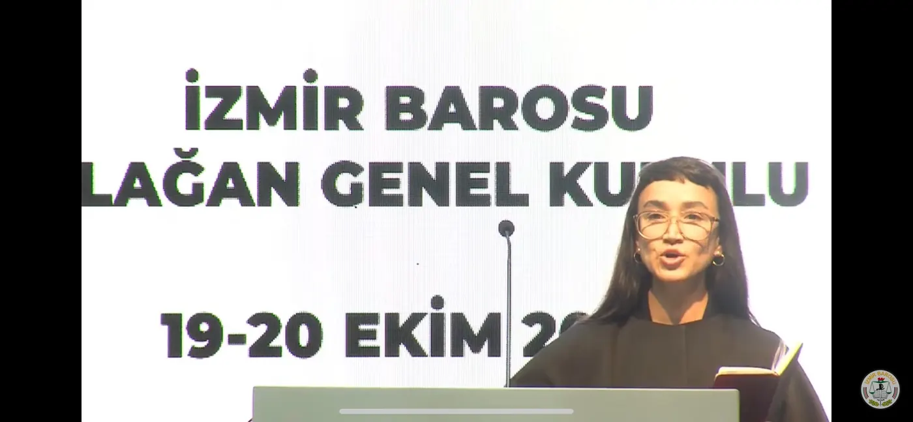
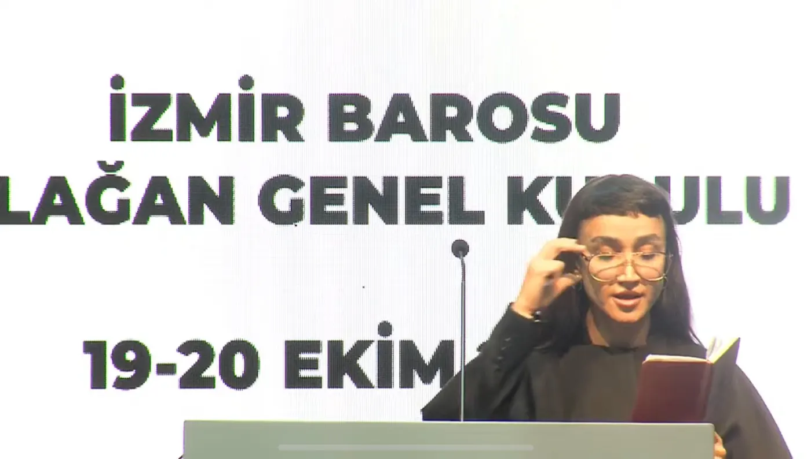
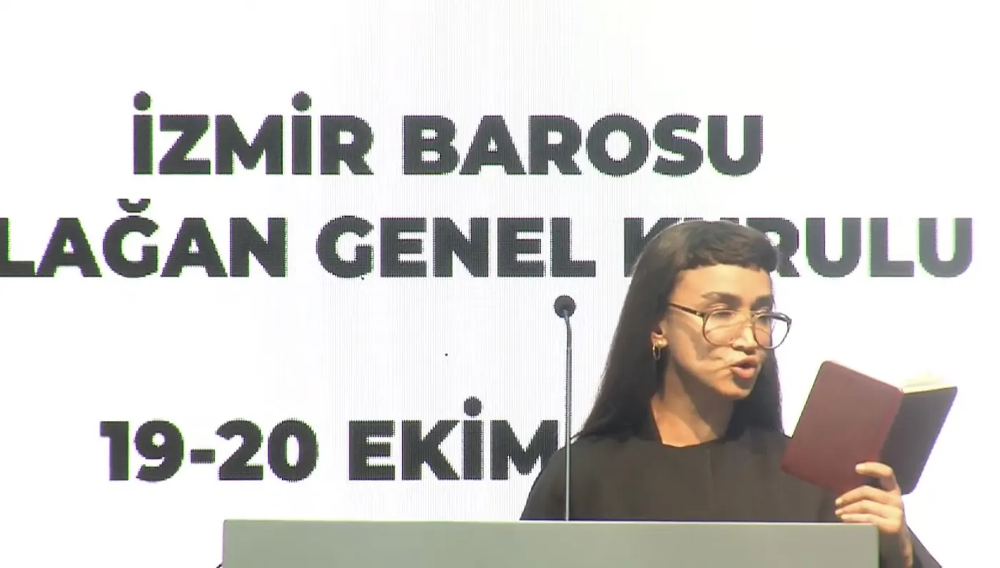

İzmir Barosu’na kayıtlı avukat.
Hukuk · Eşitlik · Toplum
Avukat
Melis Bozkurt
Nur Yeter ismiyle de tanınan, İzmir Barosu’na bağlı avukat.
Ağır Ceza Hukuku alanında çalışmalarını sürdürmekte; olağanüstü kanun yolları, Anayasa Mahkemesi ve Avrupa İnsan Hakları Mahkemesi başvuruları ile infaz süreçlerinde hukuki danışmanlık sunmaktadır.
Melis Bozkurt
Hakkında
Özgeçmiş
İzmir’de başlayan eğitim hayatını Antalya’da hukuk eğitimiyle sürdürdü.
18 Şubat 1992’de İzmir’de doğdu. Maliye Bakanlığı kreşini birincilikle, Tuğ Savul İlköğretim Okulu’nu üçüncülükle tamamladı. 2006’da İzmir Konak Anadolu Lisesi’ne, 2010’da Akdeniz Üniversitesi’ne başladı ve 2014’te mezun oldu. Vergi hukuku yüksek lisansına devam etmektedir.
18 Şubat 1992İzmir’de doğdu.
İlköğretimMaliye Bakanlığı kreşi ve Tuğ Savul İlköğretim Okulu.
2006İzmir Konak Anadolu Lisesi.
2010Antalya Akdeniz Üniversitesi.
2014Hukuk Fakültesi mezuniyeti.
GünümüzVergi hukuku yüksek lisansına devam ediyor.

İzmir BarosuMesleki çalışmalarını Ağır Ceza Hukuku alanında sürdürüyor.
Uzmanlık Alanları
Faaliyet Alanları
Ceza yargılaması, olağanüstü başvuru yolları ve bireysel başvuru süreçlerine yönelik hukuki çalışma alanları.
Olağanüstü kanun yolları
Yargıtay Cumhuriyet Başsavcılığı itirazı
Kanun yararına bozma
Anayasa Mahkemesi başvuruları
Avrupa İnsan Hakları Mahkemesi başvuruları
İnfaz danışmanlığı
Soruşturma ve kovuşturma işlemleri
Basında
Gündemdeki
Çalışmalar
Basında yer alan dava ve hukuki çalışmalarına ilişkin haberler.

Yargının Nabzı

Yeni Asır